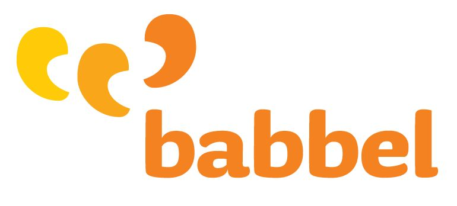

Softwares auxiliares(){
Dicas
Por: Suelen Cristina Cremonini
Abaixo listei alguns softwares e aplicativos voltados para o ensino e/ou apoio no aprendizado de outros idiomas:

Retirada de: [babbel]
Babbel
Aplicativo para Iphone e Android. Possui cursos para 10 idiomas. Cada palavra é pronunciada por nativos da língua, além de ser apresentada uma imagem relacionada a ela. É possível treinar pronúncia e ele ainda faz revisões inteligentes: apresenta os vocábulos e as frases aprendidos em intervalos regulares de tempo, permitindo uma assimilação mais rápida.
Retirada de: [bbc]
BBC Languages
Para quem entende um pouco de inglês, este site é excelente, fornece lições para 40 idiomas diferentes, utiliza jogos, exercícios, vídeos, áudio, notícias dos países cujo idioma oficial seja o estudado, testes para saber o nível em que se encontra, entre outros.
Retirada de: [busuu]
Busuu
Uma espécie de rede social. Oferece cursos de 12 idiomas diferentes. A metodologia é baseada em exercícios, testes, conversação, entre outros. Os usuários também podem se tornar “tutores” de estudantes interessados em sua língua nativa.
Retirada de: [Livemocha]
Livemocha
Outra rede social de idiomas, sendo um dos sites mais conhecidos na web. Tem disponível 35 idiomas diferentes, o ensino é feito, primeiramente, através de slides com áudio, apresentando uma figura e ensinado como escrevê-la e enunciá-la. Em seguida é feita uma revisão do que foi aprendido. No terceiro passo é proposto pelo site um assunto e o estudante faz uma redação sobre ele. Por fim, o estudante faz gravações em áudio e envia para que sejam corrigidos por outros usuários do site.
Retirada de: [U.S.A. Learns]
U.S.A. Learns
Site para ensino de inglês. Bem organizado, com vídeos, disponibilidade de envio de gravação de áudio para comparação com a pronúncia de um nativo, listas para aprender novas palavras e quiz. Site muito bom, eu uso e recomendo!
Retirada de: [web línguas]
Web Línguas
Contém cursos de inglês, espanhol e francês. É possível mudar o idioma do site de acordo com o que está aprendendo. O curso é baseado em lições com respostas, pronúncia, frases mais usadas em determinadas situações, jornais dos países cuja língua oficial é a estudada, entre outros.
Referências:
English Experts
Universia Brasil
Wikipedia
Guia do Estudante
TecMundo
Babbel
}